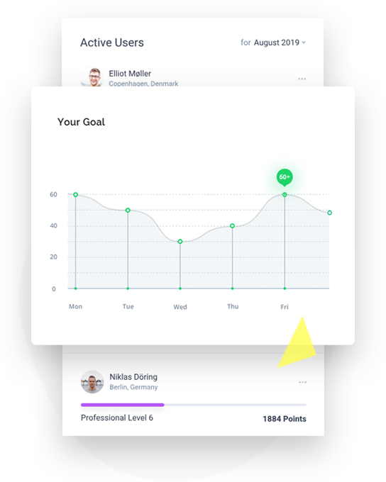
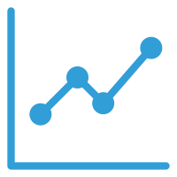
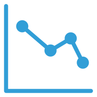

技术介绍
采用层级实时记忆技术，对股票近五年数据进行编码处理，以此训练，并对近一个月以来的股票数据进行涨跌模拟预测分析，并给出比对结果。
-
为了提高准确度，我们还对一些股票指标的数据进行了计算，并以图表的方式展示在一旁，供用户参考。
-
为了提高预测分析准确率和成功率，我们将以十天的股票数据为了单位进行预测，寻找尽可能准确的预测结果。
-
以捕捉新大脑皮层的结构与算法特性为目标的机器学习技术
股票十大指标详解
MACD
DMA
RSI
KDJ
VR

OBV

BRAR
